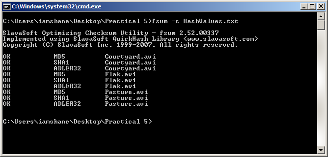

Video
In this section I will be seeing how the three hash functions perform when generating a hash function for three AVI video clips of the computer game. Each clip is roughly one minute in duration and the combined size of all clips is 34mb. Below is a list of the files.
MD-5 | SHA-1 | Adler32
For this test I was going to get FSUM to create the hash values for three algorithms at the one time and this was done using the following command fsum -md5 -sha1 -adler *.avi>HashValues.txt and it created the below hash values in under a second.
51823dfb29088b28cbb31b8dc7f61c68 *Courtyard.avi
43000f5faafdc0a1b506f41dfb0e32f7 *Flak.avi
05e47c71bc1baf9519606c9ebd5f181d *Pasture.avi
d0ba0f57bde1f2f8e6ad4402ef522cf637951853 ?SHA1*Courtyard.avi
e0b249bd501f3a0a8a627eb5f382e332160cef11 ?SHA1*Flak.avi
e75f352c6ea3334fd083e236aefc743c05a1091a ?SHA1*Pasture.avi
9bbce5a1 ?ADLER32*Courtyard.avi
45ed1d1e ?ADLER32*Flak.avi
11ddbe4f ?ADLER32*Pasture.avi
Next I wanted to verify the integrity of the hash value and to prove that it should still work as a long as the files or hash values had not changed. The screenshot below shows the command that was used and the result which was as expected.
Hash Value Files
Reference
All the information used in this website has been sourced from the following locations:
An Illustrated Guide to Cryptographic Hashes. 2011. An Illustrated Guide to Cryptographic Hashes. [ONLINE] Available at: http://unixwiz.net/techtips/iguide-crypto-hashes.html. [Accessed 24 November 2011].
Bruce Schneier, 1995. Applied Cryptography: Protocols, Algorithms, and Source Code in C, 2nd Edition. 2 Edition. Wiley.